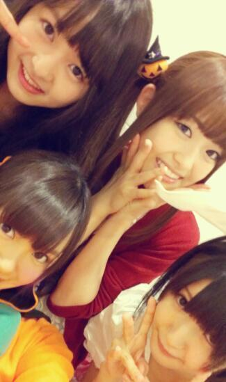

| 2012/10 27 Sat | ひめたん(*>ω<*)そ の222 |

かぼちゃたん。
happy hallowe e e e e e en !!!!!
個別握手会 in 横浜パシフィコ
来てくださった方
ありがとうございました＊
4部はかぼちゃたん。
えどうしたのひめたんとか
そーゆことは言わないで下さい←
今日はコスプレしてるメンバー多くて
なんか楽しかったねー(*^^*)
このかぼちゃたん頭がよく取れるのよ。
あっついしね。
やーそれは想定してなかった←
5部は黒×ぴんくワンピ＼(^^)／
噂のぶらっくひめたんではないですー
今日のテーマはギャップねん♪
かぼちゃたんかーらーの
お姉たまになりました///
ワンピは今度載せるね＊
ワンピ意外と好評だった照れた照れたっ
みなさんはどっちがすきー？
そういや3rd最後の握手会だ！
本当にありがとうございました(^ω^)
3rdもいろんなことできた。
初めてのワンマンライブに東京公演と
パフォーマンスする場を
たくさんいただいたり
ダンカンさんに
個人PV作っていただいたり
夏休みにいろんなとこまわって
取材していただいたり
もうーね嬉しいね(´;ω;`)
3rd期間でもまた
成長できたんじゃないかなー＊
次は4th！
もう4thに向けて動き出してるぞー
てなわけで
これからも乃木坂46とひめたんを
よろしくお願いしますーふふふ
明日もお仕事です＼(^^)／
朝はやいぞー気合いだーえいえいおー
あ
ゆみ姉のスピーチよかったよ(ノω;`)！

( ＊ ´・ω・ ＊ )ひめたん
コメント(182)
2012/10/27 23:18